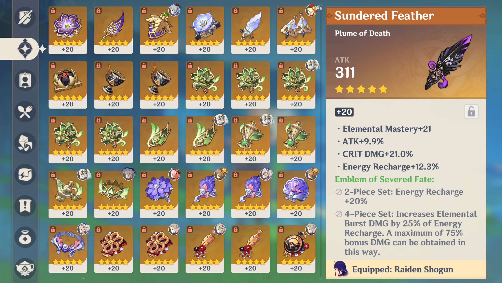
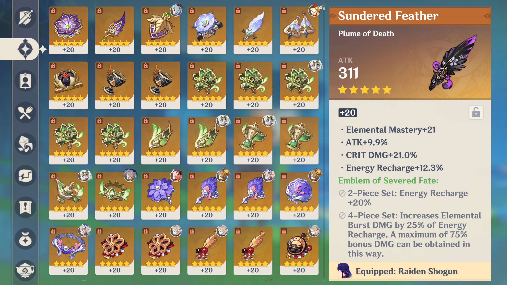

Map exploration
Materials
TIP: Since Genshin is an exploration game, it is important to collect whatever materials collectible. This will certain become useful at one point. Excess of materials are never an actual problem in this game.
Leylines: Exp books used to level up characters can be farm through the blue leylines, whereas yellow leylines are used to farm mora
 

There are many regions inspired by different cultures globally with various topography, materials and constructions. To travel across the map quickly, travellers can use waypoints, Statue of the Seven, or domains
- Waypoints: teleport anchors
- Statue of the Seven: can also heal your characters to full health. Oculus can be offered to statues of the resembled regions for rewards.
- Domains: Domains are structures for farming materials from weapon ascensions, talent ascensions, artifact sets. Special domains can also be used for fighting weekly bosses for special ascension materials
The icons on the map of Mondstadt below are statues and domains that can be teleported to.